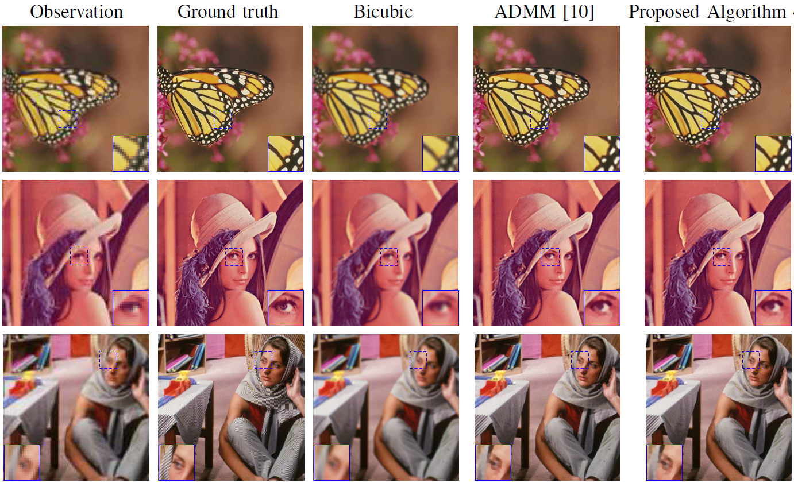

Fast single-image super-resolution
This work addresses the problem of single image super-resolution (SR), which consists of recovering a high resolution image from its blurred, decimated and noisy version. The existing algorithms for single image SR use different strategies to handle the decimation and blurring operators. In addition to the traditional first-order gradient methods, recent techniques investigate splitting-based methods dividing the SR problem into up-sampling and deconvolution steps that can be easily solved. Instead of following this splitting strategy, we propose to deal with the decimation and blurring operators simultaneously by taking advantage of their particular properties in the frequency domain, leading to a new fast SR approach. Specifically, an analytical solution can be obtained and implemented efficiently for the Gaussian prior or any other regularization that can be formulated into an l2-regularized quadratic model. Furthermore, the flexibility of the proposed SR scheme is shown through the use of various priors/regularizations, ranging from generic image priors to learning-based approaches. In the case of non-Gaussian priors, we show how the analytical solution derived from the Gaussian case can be embedded into traditional splitting frameworks, allowing the computation cost of existing algorithms to be decreased significantly. Simulation results conducted on several images with different priors illustrate the effectiveness of our fast SR approach compared with the existing techniques.

Fig. 1. SR results with TV regularization. First column: observed LR images, second column: target HR images, third column: bicubic interpolation, fourth column: ADMM algorithm, fifth column: proposed algorithm.
The derivation of the fast solution and various SR algorithms are detailed in the submitted paper
- article
 .
.
The corresponding Matlab codes are available below.
- matlab codes
 [ .zip - 220Ko ].
[ .zip - 220Ko ].